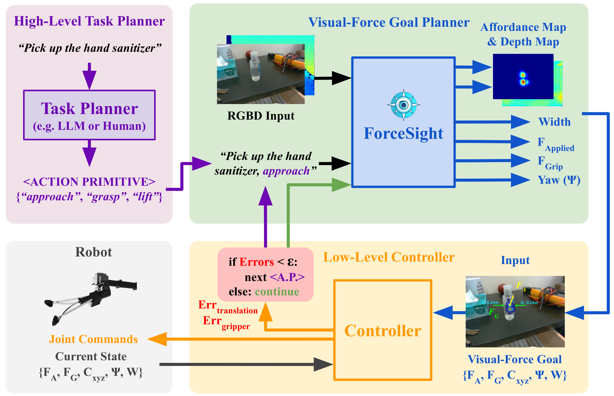

The ForceSight system architecture comprises several components that work together to accomplish a text-conditioned task. It begins with a High-level Task Planner, which takes a text input and generates a sequence of action primitives representing subgoals. These action primitives, along with the RGBD input, are then passed to the ForceSight transformer model. The ForceSight model processes the input and produces force-based objectives. These objectives are subsequently fed into the low-level controller, which generates joint motion commands for the robot to execute the task and its action primitive. To determine when to switch to the next action primitive, the low-level controller compares the error between the current states and visual-force goals with a predefined threshold. If the error is below the threshold, the low-level controller initiates the switch to the next action primitive. This entire process loop operates at a frequency of 8Hz, allowing for multiple iterations until the task is completed successfully.